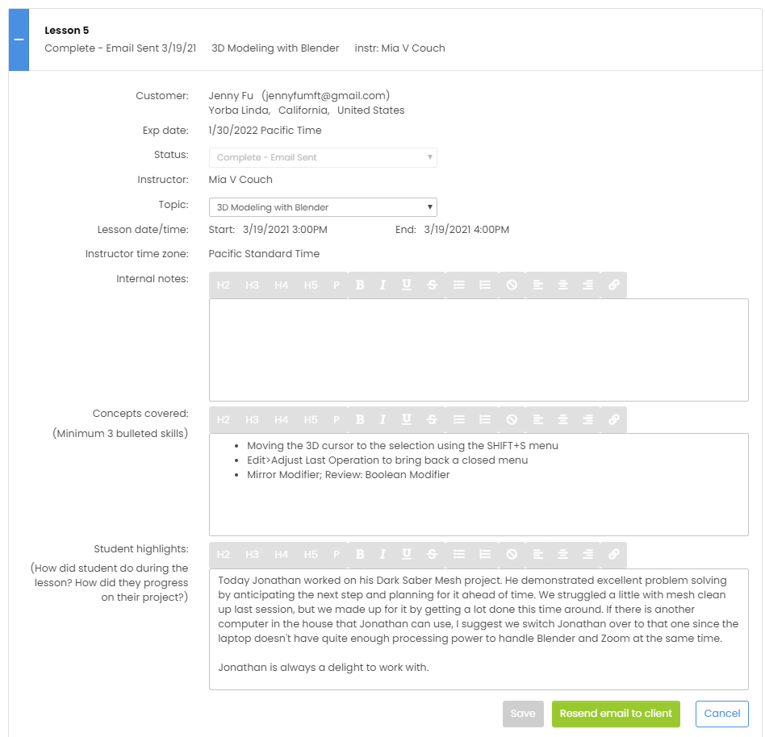
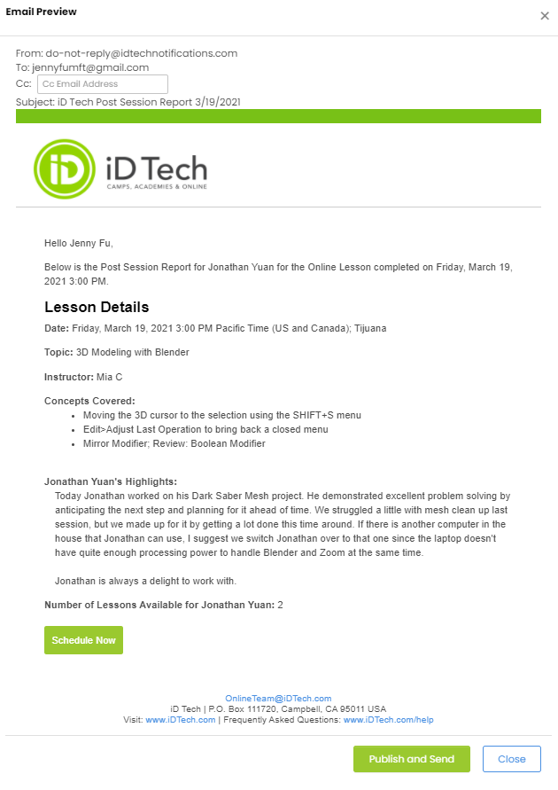

Best practices for form design
April,15th, 2021
Reading; Impressions and Observations
Upon reviewing the assigned article what stood out to me was that many of the reccommendations were intuitive to me. That's something I have often noticed about learning: sometimes when you learn something you aren't introduced to any new information, but rather you simply have familiar information contextualized for you in a way you haven't seen before.
Since using the internet is now a universal requirement for interacting with modern world, I think we have all encountered and struggled with poorly designed forms in our recent memories. As a person with ADHD I am easily over-stimulated and so it's no surprise that I struggle with the phenemonen of "visual overwhelm" discussed in class on Tuesday. Seeing the suggestion that forms be separated into separate pages makes a lot of sense to me, because I have noticed that these types of forms are the most pleasing for me to use.
As an additional observation, I have often found that with paperwork I tend to fill out the form out of order, scanning the page for the information that I can remember off the top of my head and going back and filling out the areas that require me to find my references, look up dates, and provide documentation. However, this approach often leads to errors because I miss spots and leave necessary areas blank. With that in mind, I found the suggestion that a form begin with the least-complicated questions a refreshing idea, since that mimics what my brain does naturally without presenting the possibility of forgetting to fill out important information.
Evaluate; Considering the Design of a Specific Form
For my job I teach young students private lessons about coding and 3D modeling. The company I work for requires us to send an email to the student's parents after every session to outline what the student learned and how the lesson went. For this process we use a tool on the company website called the PSR or Post Session Report form.
Pros:
What I like about this email form is it makes it easy to quickly identify all of the information that I need to know about the lesson, what needs to be included in the Post Session Report and the formatting gives it a visual style consistent with the company's brand. Upon clicking the button at the bottom I can preview the email that I am about to send and the form automatically includes and intro which addresses the client by name and the outro includes my email signature. On top of this content being automatically generated the email is also automatically formatted according to the visual style of the company's brand.
Cons:
Since this is a form that I use everyday it's flaws have quickly become major pet peeves of mine. First of these is that the link that leads to this page is labelled "Go To Post Session Report" but upon loading the page shows all of the students lessons, not just today's lesson. This has led to me, on multiple occasions, accidentally "delivering" an email for the incorrect lesson. An issue which I cannot fix without contacting a manager. Annoying! The other frustration is that the page has not been designed to be light-weight resulting in a loading time of 2 to 3 seconds when first opening the page. This may not seem like that much time, but it is irritating because this is a form that I have to use every work day to send an email that has a time-deadline 4 minutes after class ends. I have gotten multiple warnings that I am sending PSR emails late, so that 2 to 3 seconds is extremely painful to sit through when I am racing the clock!
In Conclusion
While design can be a fun and creative endeavor we should always keep an mind that first and foremost the purpose of design is to create a pleasant user experience. While creating aesthetically pleasing web pages can be fun, we shouldn't let creative expression get in the way of the user's experience. Forms are one such area where much of the room for creative is stripped away, leaving the bare bones of usability. Nobody cares that a form is pretty if it's unusable.